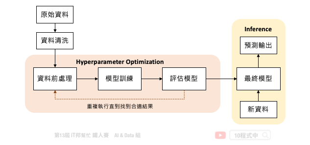

[Day 19] 自動化機器學習 - AutoML
今日學習目標
- 了解何謂 AutoML
- 超參數調參方法
- Grid Search
- Random Search
- Bayesian Optimization
AutoML 的動機
大家還記得在 [Day 5] 機器學習大補帖 中有提到完整的機器學習流程大致分成八個步驟。然而模型的訓練與超參數調整僅扮演其中的一環，選擇一個好的模型是件重要的事情。想必大家在訓練模型時一定會遇到一個棘手的問題，就是該如何正確選擇模型以及調整超參數？隨著越來越多的演算法不斷地被開發出來，要從茫茫大海中挑選一個合適的模型是件耗時的事。因此自動化機器學習 (Automated Machine Learning ,AutoML) 可以幫助我們在有限的時間內找出一個滿意的模型。在近年來有許多人開始研究這類的問題，筆者彙整了幾個 Python 熱門的 AutoML 開源套件：
- AutoGluon
- Auto-sklearn
- FLAML
- H2O AutoML
- LightAutoML
- Pycaret
- MLJAR
- TPOT
- MLBox
- Auto-PyTorch
- AutoKeras
- talos
AutoML 扮演的角色
自動化機器學習提供了一系列的方法和自動化的學習流程，以提高機器學習的效率並加速機器學習的研究。透過 AutoML 集結專家的先驗知識，大幅降低了機器學習建模的困難度。雖然領域專家與 AI 工程師必然扮演重要的角色，但是近年來 No Code 無程式碼開發平台形成一股潮流。AI 再也不是需要資訊背景的人才能做的事，目的是讓大家不用透過寫程式也能快速地進行資料探索與建立預測模型。然而近年來許多企業開發了各種需求的 AutoML 平台，如雨後春雨般的出現：
- Google: Cloud AutoML
- Microsoft: Azure Machine Learning
- Amazon: SageMaker Autopilot
- Landing AI: LandingLens
- Chimes AI: tukey
AutoML 能幫助多少事情
典型的機器學習流程是一個迭代的循環週期，從定義問題、資料收集與處理、模型設計到最終模型部署，每個步驟極為重要且缺一不可。此外一個好的機器學習的專案需要執行 MLOps 的流程，才能夠讓模型在實際應用場景越來越好真實地解決問題。MLOps 指的是從 AI 模型訓練到部署上線的一套完整機器學習工作流程，近年來這一名詞非常熱門，它其實就是 ML (機器學習) 與 DevOps (開發與維運) 的結合。如下圖所示從訓練模型到正式部署中間還有許多事情要處理，而模型上線後還是要持續監控並收集新的場域資料。最後將資料收集到一定程度，又回到週期的第一步重新訓練新模型。至於模型該如何重新訓練並保持資料的隱私性就是另一門議題。這時候我們就能採用一個技術叫做 Federated Learning (聯合學習) 想辦法處理這類的事情。

但是我們可以發現訓練一個機器學習模型，在 MLOps 的週期中僅扮演小小的一塊角色。下圖是一個訓練機器學習模型的基本流程，中間橘色的部分就是 AutoML 可以幫助我們的事。從資料前處理、訓練模型到評估模型需要不斷地的進行試驗，並且嘗試各種不同的模型演算法與模型超參數。除此之外還有資料前處理與特徵工程，都可以透過 AutoML 自動化的訓練找到一個滿意的模型。

超參數調參方法
機器學習自動化的困難點在於資料清洗與特徵工程技巧。一個好的特徵表達可以讓模型快速地抓到關鍵因子，並讓模型預測能力提升。慶幸的是模型挑選和超參數調整已經有比較成熟的方法可以協助我們有效的搜尋。
- Grid Search 網格搜索/窮舉搜索
- Random Search 隨機搜索
- Bayesian Optimization 貝葉斯優化
Grid Search
Grid Search (網格搜索) 又稱窮舉搜索。它的搜索方式是在所有可能的參數中，透過排列組合嘗試每一種可能性。並將表現最好的參數最為最終的超參數搜尋結果。他的缺點就是當有許多超參數要尋找時，他的排列組合就會變得非常多，導致搜索的時間變長花費的資源也變大。因此這種暴力式的搜索方法適合在小的資料集上被採用。然而在 Sklearn 套件中有提供 GridSearchCV 方法，使用者可以自己設定參數列表，並透過所有可能的參數組合一個一個嘗試找到最合適的參數。
from sklearn import svm, datasets from sklearn.model_selection import GridSearchCV # 載入鳶尾花朵資料集 iris = datasets.load_iris() # 設定想要的搜索參數並給予候選值 parameters = {'kernel':('linear', 'rbf'), 'C':[1, 10]} # 建立 SVC 分類器 svc = svm.SVC() # 網格搜索所有可能的組合(2*2)共四種 clf = GridSearchCV(svc, parameters) # 擬合數據並回傳最佳模型 clf.fit(iris.data, iris.target)
搜索結束後也能夠過 cv_results_ 查看所有組合的超參數所對應的訓練結果。
clf.cv_results_
Random Search
Random Search (隨機搜索) 按照字面上的意思就是在所有可能的候選參數中隨機挑選一個數值並嘗試。如果需要調的參數較多的時候，使用隨機搜索可以降低搜索時間，同時又能確保一定的模型準確性。在 Sklearn 套件中也有提供 RandomizedSearchCV 方法可以呼叫，與網格搜索的差別在於使用者可以將欲搜尋的超參數設定一個期望的範圍。該方法會在此範圍中隨機抽一個數值並進行模型訓練並驗證模型。並找出所有隨機組合中表現最好的一組超參數。
from sklearn.datasets import load_iris from sklearn.linear_model import LogisticRegression from sklearn.model_selection import RandomizedSearchCV from scipy.stats import uniform # 載入鳶尾花朵資料集 iris = load_iris() # 建立邏輯迴歸模型 logistic = LogisticRegression(solver='saga', tol=1e-2, max_iter=200, random_state=0) # 設定欲搜尋的超參數並給予一個期望的範圍 distributions = dict(C=uniform(loc=0, scale=4), penalty=['l2', 'l1']) # 隨機搜索預設 n_iter=10 clf = RandomizedSearchCV(logistic, distributions, random_state=0, n_iter=10) # 擬合數據並回傳最佳模型 search = clf.fit(iris.data, iris.target) search.best_params_
Bayesian Optimization
Bayesian Optimization (貝葉斯優化) 目標是要在最少的試驗下尋找一組最佳的超參數使得錯誤率能夠越低越好。由於我們所收集到的資料無從得知該模型的目標函數是長怎樣，因此機器學習的目的就是要從這些資料中去擬合一個函數，目標是給予一筆輸入 X 該函數的輸出要與真實的答案越接近越好。透過代理優化 (surrogate optimization) 使用一個代理函數來估計目標函數。簡單來說代理函數是指目標函數的一種近似，此外代理函數可基於取樣得到的資料點被構建出來。

代理函數的目的是在給定一組特定的候選超參數的情況下快速估計實際模型的錯誤率。透過這種方式可以快速決定該組超參數是否可以被拿來實際訓練模型。隨著試驗次數的增加，代理函數隨著先前的試驗結果而更新改進，並開始推薦更好的候選超參數。

Auto-sklearn 就是一個透過貝葉斯優化來尋找最佳超參數的一個工具。同時它也能搜索在 Sklearn 中所有可能的算法，並為你推薦一個合適的模型與資料前處理方式。明天我們就來一探究竟該套件背後的神秘原理以及程式實作吧！
Reference
本系列教學內容及範例程式都可以從我的 GitHub 取得！